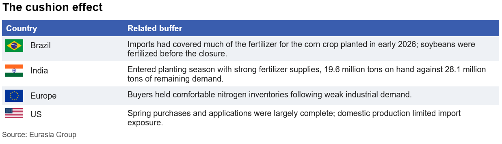
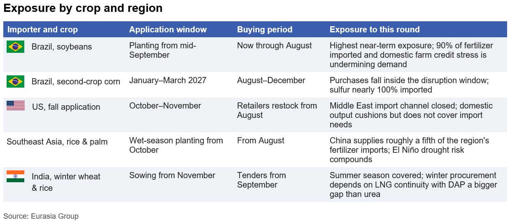

|
 |
|||
|
||||
|
||
Large agricultural supply buffers made the first Strait of Hormuz closure appear manageable. Farmers and distributors had front-loaded fertilizer purchases ahead of the Northern Hemisphere planting season, commercial inventories were high across key importing regions, production facilities operated normally, and an active ceasefire process led markets to treat the disruption as temporary. Nitrogen fertilizer prices still jumped 50% in five weeks to above $700 per metric ton, yet physical shortages did not materialize and prices fell back almost as quickly once the June ceasefire took hold.  These buffers absorbed the initial disruption and kept price increases relatively contained. A second closure will catch buyers with empty warehouses and empty order books. After prices began to fall following the ceasefire, importers assumed that every week of waiting would bring lower costs. US retail nitrogen prices fell another 6% in early July. That strategy only works if peace holds. With blockades back in place, buyers that delayed purchases will now compete for the same product at the same time. A market that rewarded patience for months will now punish it. The grain safety net is also thinner, with US wheat carryover projected to fall by more than 20%. Governments on both sides of the fertilizer trade are amplifying the shock. The World Trade Organization estimates that restrictions imposed since the first closure cover up to 15% of global fertilizer trade. China’s bans will run through at least August. Russia’s quotas favor friendly nations, while drone strikes on Russian plants have clouded phosphate supply through year-end. The US launched a $500 million domestic production program on 1 July, and India approved incentives on 15 July for up to nine new urea plants after gas cuts cost it 800,000 tons of output in March alone. The one measure that moves supply now is Washington's temporary suspension of duties on Moroccan phosphate. Nothing else adds capacity soon. Instead, they suggest that no major government expects the market to normalize. Weather patterns will make the fertilizer squeeze more costly. Unusually strong El Niño conditions will intensify through September and peak around the turn of the year, raising drought risk across the Indian subcontinent, Southeast Asia, and Australia. Reduced fertilizer application lowers yield potential, adverse weather will magnify those losses, and supply deficits could extend beyond a single season.  Renewed shipping disruption, tighter export controls, and a hostile growing season would turn what began as a temporary logistics problem into a global agricultural supply shock. Fertilizer prices would rise first, crop production would fall second, and food inflation would follow, with the poorest importers priced out of the market entirely. Signposts to watch
|